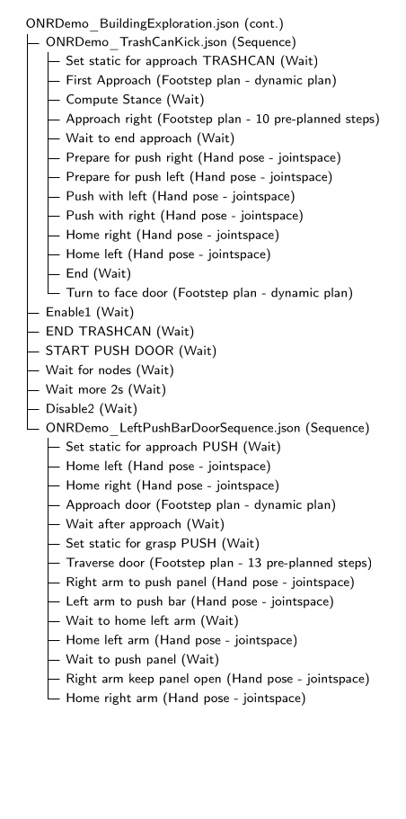

2024 Nadia, Semantic Perception, Fast Behaviors Era
Can Pick and Place

In January 2024, in an effort to demonstrate advancements in manipulation capability, the behavior system was used in a demo that picks up a shoe off a table, sidesteps, places the shoe in a banker’s box, picks up the box, and backs away with it as shown in 1. This behavior was authored by Dexton Anderson and Dhruv Thanki and was a good example of the behavior system being used by someone other than Duncan Calvert or Luigi Penco, who had been the primary users until this point. The behavior was executed using manually stepping as opposed to the automatic mode and lasted 3 minutes and 9 seconds. This was also the first integration of a CenterPose model for the shoe and the first behavior that did not use an ArUco marker for manipulation of an object. The behavior was split into three separate JSON files which were executed separately: “LeftHandShoePickUp.json”, “ShoeDropOff.json”, and “PickUpBankersResizableBox.json”.
This behavior was very difficult to get to work due to the unreliability of the components. The Nadia T-Motor arms and lower body EtherCAT bus would often fault, causing the robot to fall. CenterPose was very unreliable in detecting the shoe. There was no onboard compute so a laptop was tethered to the robot to run the perception and behavior processes. On top of those, the behavior system was still new and buggy. We also had a new implementation of a scene graph that worked with the behavior system, but separate. This scene graph had synchronization bugs.
Behavior System User Interface

Also in January 2024, a major refresh of the behavior system user interface was completed as shown in 2. The general visual improvements in this version are still present in 2026 at the time of writing. The major changes included the following.
-
Icons were added for the action types to aid in visual navigation.
-
Actions could now be renamed by double clicking them, typing the new name, and hitting enter.
-
The settings for each node were moved to a modal area at the bottom of the Behavior Tree panel instead of being inlined next to each node. This was an important change that simplified the user experience, as only one node should be modified at a time.
-
The root node selection area was refreshed visually and used selectable underlined text buttons.
-
Action progress was now plotted at the top as an option instead the progress bars. The user could toggle between these two types of progress information.

On February 4, 2024, we achieved the fastest push door behavior yet on Nadia in 17 seconds, shown in 3. By this time, Nadia’s upper arms had been upgraded to a cycloid drive based design. It also used an “execute with next action” boolean option for action nodes which was added back in September 2023. The “execute with next action” feature supported executing multiple nodes at once, contributing to the speed of this push door behavior. This action sequence node would not wait for the currently executing action to complete if this field was true for the next action. Instead, it would immediately execute it too, such that multiple actions could be running at once.

Also in February 2024, we added a feature that shows an asterisk next to the behavior node names if they have been modified, as shown in 4. This was an important usability feature in behavior authoring, because accidental behavior modifications were common at this stage in the implementation. It was, therefore, important to understand when a modification was made so the operator could undo it if necessary. This feature involved some extra boilerplate in each node’s definition implementation but was well worth it for the usability improvement.
Execute After

In March of 2024, the “execute with next action” concurrency feature was replaced with an “execute after” node pointer. This allowed each action to declare a dependency on which action to wait for. By setting the “execute after” field to something earlier than the previous action, actions could start along with prior actions. This also allowed for action scheduling using the Wait action in combination with the “execute after” field. For example, arm motions could be scheduled during walking. This feature enabled our fastest ever door traversal, performed on March 15 2024, as shown in 5. In this behavior, Nadia traversed a spring-loaded push door without stopping walking in 14 seconds, using nubs for hands and an ArUco marker for detecting the pose of the door.
Composite Frame

On April 9, 2024, we demonstrated a bimanual box pick and place behavior as shown in 6. With some padding attached to the nub forearms, Nadia executed a behavior that picked a box up from a pallet on the ground, carried it to a table, set it down, and backed away.

On April 12, 2024, we demonstrated a pull door behavior in 19 seconds, shown in 7. This behavior used a new YOLO model for door opening mechanisms and did not use an ArUco marker.
Earlier, in late March 2024, we had started implementing a heuristic door traversal node as a place to hard-code door-specific logic while continuing to use the runtime editable actions. The purpose of this was to implement reactive elements like retries on failure before figuring out how to generalize it with fallback nodes. Pseudocode for the initial pull door lever retry is presented in [alg:pull_door_screw_primitive_retry]. This algorithm didn’t work as reliabiliy as the one we will present next.

On April 12, 2024, we used this strategy to demonstrate a reactive version of the pull door behavior, as shown in 8. A human repeatedly holds the door closed, pulls the door closed, and pushes the robot’s hand back as the robot tries to open the door. The door traversal node detects the action failure, rewinds to the grasp approach action, and tries again until successful.
An improved hard-coded heuristic, presented in [alg:door_traversal_node_reactive], was used to detect three types of failures specific to opening a door. At the end of the grasp action, if the hand did not reach the handle, we assume the grasp failed. At the end of the pull door open action, we check the pose of the door handle and the pose of the robot’s hand. In the case the handle did not move far from its original position, we assume that the unlatch failed. In the case the handle pose is far from the hand pose, we assume the hand slipped off. On any type of failure detected by this node, we rewind the action sequence to the grasp approach action, where the robot immediately begins to retry the door opening. This approach worked well for the human holding the door shut, pulling the door out of the robot’s hand, and pushing the robot’s hand away from the door handle. In all three cases, the robot was able to recover and successfully execute the full door traversal without operator intervention.
During this demo, we noted the friction with hard-coded reactive logic. Iterating from [alg:pull_door_screw_primitive_retry] to [alg:door_traversal_node_reactive] took a lot of time and guesswork. Our metric for evaluation was the reliability of the reactive retry mechanism. Since this test required the full system to be online and two people to operate, one at the operator computer and one to disturb the robot, experiment time was scarce. Having to change code, implement debugging output, redeploy, and restart the behavior to modify the reactive logic sucked up even more of that time. It was clear that a fallback node, proximity condition, and improved action success criteria would streamline this process in the future.

On July 3, 2024, we wanted to show reliability and behavior composition in a building exploration type environment. We put together a behavior to traverse three doors of different types consecutively in one continuous automatic execution. We built three lab doors for this: a door with spring closer with a push bar on one side and a pull handle on the other, a knob handle door with a spring closer, and a lever handle door without a spring closer. We traversed the first two doors in 48 seconds but fell after opening the third door. This run is shown in 9.
There were a couple of failure modes that made achieving this behavior difficult. Firstly, the EZGripper gripper, having only two fingers and limited grippiness, resulted in slipping off the pull lever handle very often. Additionally, having only two fingers made getting a solid grasp on the knob handle difficult. For example, if the two fingers are not positioned at opposite vertices of the circular knob handle, it would slip off to the side. This was a key moment in realizing that having at least three fingers would make door behaviors more reliable.
Another failure mode, and the one that ultimately prevented us from getting the third door completed, was the result of a combination of hardware and control issues. The Nadia robot was tethered to a hydraulic pump across the room and the hydraulic cabling was very stiff. Also, Nadia’s hip pitch actuators in their configuration were barely strong enough to lift the leg when the arms were also out in front of the robot, as required for door traversals in not colliding with the door frame. When the robot was positioned to traverse the third door, the hydraulic cables put enough extra torque on the robot to make walking through the door un-achievable for the robot and it repeatedly fell.

Later that month, we attempted an extended version of that behavior in which we turned the behavior into a multi-room search. Dubbed the “ONR Demo”, this behavior was demonstrated on July 19, 2024. A test run is shown in 10 which is a partial version. At the time of writing, we have been unable to recover video of the full run, but we recall having searched all three rooms, including moving the couch to check under it and performing a salute behavior in the third room.
We have printed the structure of the behavior, generated from the actual JSON in 11 and 12.

On the day of the ONR Demo demonstration, we were able to accomplish each task without a failure. However, in the run-up to the demo, we noted an important property of behavior composition. Our full demo was composed of seven main loco-manipulation behaviors:
-
Traverse a push bar door.
-
Move the recycling bin out of the way.
-
Traverse a push knob handle door.
-
Traverse a pull knob handle door.
-
Traverse a push lever handle door.
-
Traverse a pull lever handle door.
-
Move the couch.
Our observation was that even if each behavior had a success rate of 90% (which they didn’t), the full demo reliability is calculated as $$ 0.9^7 = 48.7% $$ which is an alarmingly low (less than 50%) full-demo success rate even when the sub-behaviors have achieved very good reliability. On the day of the final demo, where we were ultimately successful, our success likely hinged on sufficiently configuring and testing the initial conditions such that the chance of success was much higher.